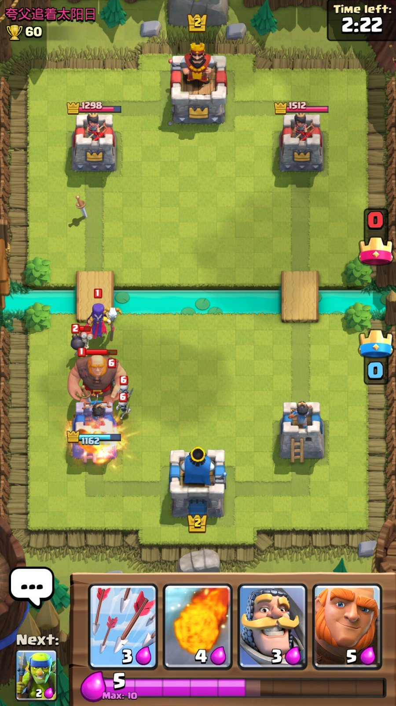
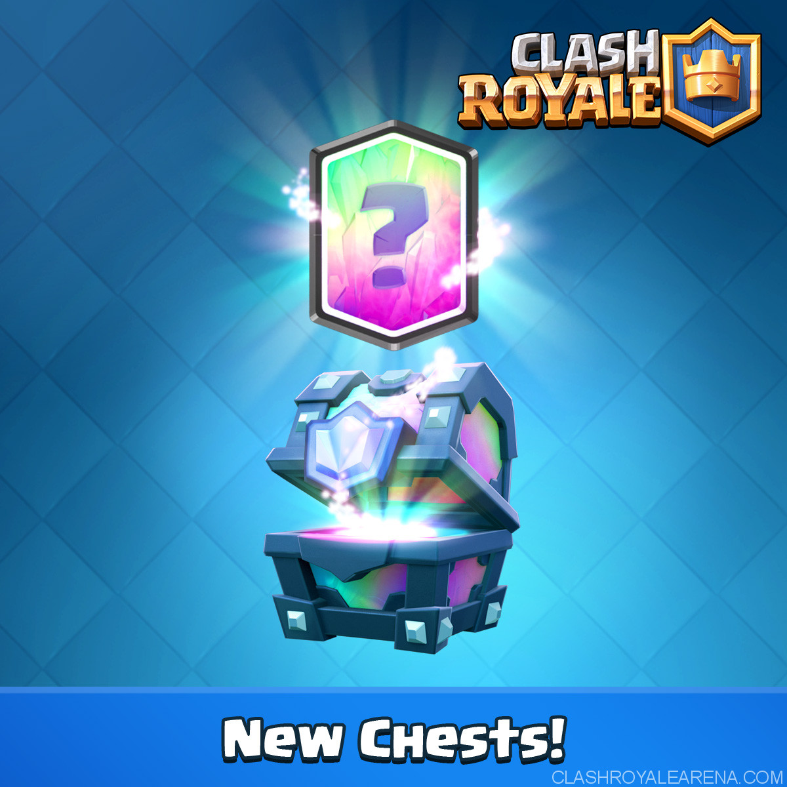
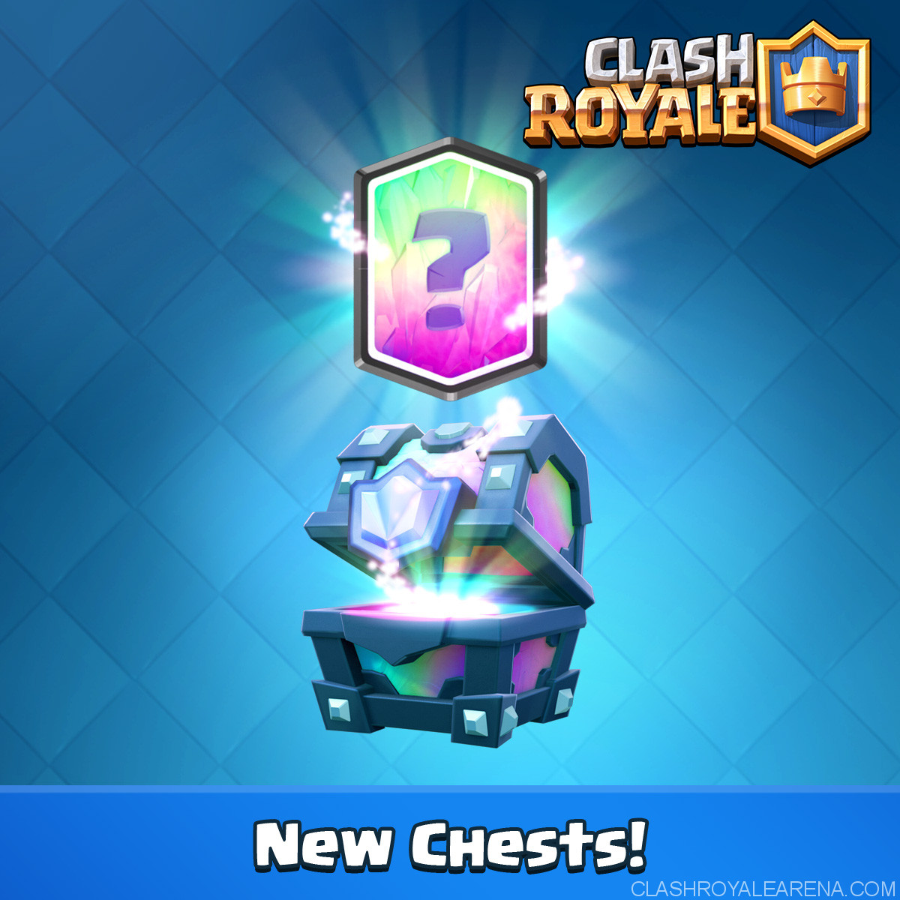

This page will explain the gameplay and system of the game "clash royale". (Everybody should know this game now, It is too popular!)
When you enter a battle, you play your troops by draggin it from your hand to your territory. Troops attack and damage opponent troops, buildings and towers. Spell cards can be used anywhere, and affects opponent troops, buildings, and towers. When you place building cards, Building stay in your territory, supporting you in the game. To play these cards, you need to spend a specific amount of elixer. Elixer auto generates each 2.8 seconds, and this becomes double when there is only one minute left in the game. When you make a tower's health 0 with your troops or spell (or building, if you use the x-bow or motor), you get 1 crown, and expand your territory. the winner is the one who gets more crowns after three minutes. If it is a tie, there is a sudden death, and whoever gets the next crown wins.
 Chests can be earned by winning games and you can store up to 4 chests (excludes free and crown chests). They give gold and cards, unlocking new cards and upgrading them. Chest unlocking is free, but takes time. Can be speeded by gems.
Free chests:You get one Free Chest every four hours and you can store two of them. Can not be speeded by gems. Has a chance to earn Gems.
Crown chests: Every 24 hours you can collect 10 Crowns to unlock the Crown Chest. Can not be speeded by gems. Has a chance to earn Gems.
Silver and Gold chests: The gold chest is rare than the silver chest, and they have more rewards than the silver ones. Siver chests need three hours, and Gold chests needs eight hours to unlock.
Giant chests: This chest is rarer than the gold chests. Gives lots of money and cards.
Magical chests: Same rarity as the giant chest. Gives less cards than the giant chest, but gives guranteed epic cards.
Epic chest: More rare than the magical chest. Gives only 20 random epic cards. No gold.
ledgendary chest: Same rarity as the epic chest. Gives only 1 random ledgendary card. No gold.
super magical chest: The most hardest chest to get in a battle. The reward is epic, giving the most cards and gold compared to any chest. Has a high chance to get a ledgendary card.
 

When you win games, you also earn trophies, deducted from your opponent. When you collect trophies, you can climb up arenas, playing in new maps. Not only that, but new arenas unlock new cards and increaces your donations you can do and get in your clan.
When you join a clan, you can friendly battle with your clanmates, donate cards to other people, and contribute for the clan chest. When you donate cards to other people, you lose some spare cards, but you earn money and user exp. Collect user exp to level up your user level, which is important because high user levels give high attack and hp for the king and arena towers when battling. The clan chest is like a crown chest, but everyone in the clan contributes. Earn enough crowns to raise the tier of the clan chest, and earn more rewards.
Unlock and Collect cards by unlocking chests, and upgrade the cards you have using your spare cards and gold. Upgrading cards will give user exp. To simplify what I was talking for the whole page this is simply the system: